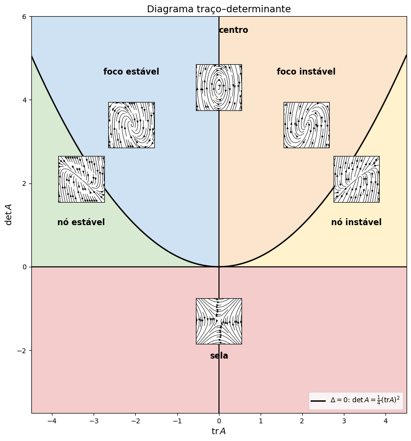
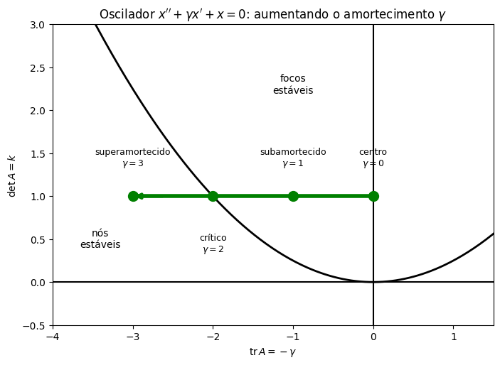

Resumo: os Três Casos e a Estabilidade#
Nas últimas três aulas, resolvemos \(\mathbf{x}'=A\mathbf{x}\) nos três casos possíveis para os autovalores. Vamos amarrar tudo num único resultado, como fizemos para as equações de segunda ordem, e depois organizar a estabilidade dos sistemas \(2\times2\) numa única figura.
Os três casos para sistemas \(2\times2\)#
Teorema. Seja \(A\) uma matriz \(2\times2\) real, com equação característica \(\lambda^2-(\operatorname{tr}A)\lambda+\det A=0\) e discriminante \(\Delta=(\operatorname{tr}A)^2-4\det A\). Então o sistema \(\mathbf{x}'=A\mathbf{x}\) sempre tem duas soluções linearmente independentes, todo PVI \(\mathbf{x}(t_0)=\mathbf{x}_0\) tem solução única, e a solução geral é dada por:
\(\Delta\) |
Autovalores |
Solução geral |
|---|---|---|
\(\Delta>0\) |
\(\lambda_1\neq\lambda_2\) reais |
\(c_1\mathbf{v}^{(1)}e^{\lambda_1t}+c_2\mathbf{v}^{(2)}e^{\lambda_2t}\) |
\(\Delta<0\) |
\(\alpha\pm i\beta\), autovetor \(\mathbf{a}+i\mathbf{b}\) |
\(c_1e^{\alpha t}(\mathbf{a}\cos\beta t-\mathbf{b}\,\text{sen}\,\beta t)+c_2e^{\alpha t}(\mathbf{a}\,\text{sen}\,\beta t+\mathbf{b}\cos\beta t)\) |
\(\Delta=0\) |
\(\lambda\) duplo, um autovetor \(\mathbf{v}\) |
\(c_1\mathbf{v}e^{\lambda t}+c_2(\mathbf{v}te^{\lambda t}+\mathbf{w}e^{\lambda t})\), com \((A-\lambda I)\mathbf{w}=\mathbf{v}\) |
(No caso \(\Delta=0\) com dois autovetores, ou seja \(A=\lambda I\), vale a primeira linha com \(\lambda_1=\lambda_2\).) Em cada caso, o determinante \(W\) formado pelas duas soluções nunca se anula, então elas são independentes e geram todas as soluções.
O mesmo vale para sistemas \(n\times n\): sempre é possível encontrar \(n\) soluções independentes, combinando os três tipos de construção (autovetores, partes real e imaginária, e autovetores generalizados, que podem exigir potências maiores de \(t\)). Há uma analogia completa com o que vimos para equações de ordem \(n\): as raízes da equação característica fazem o papel dos autovalores, e cada tipo de raiz contribui com o mesmo tipo de função.
Vamos conferir os três casos com os exemplos das aulas anteriores:
import numpy as np
import matplotlib.pyplot as plt
import sympy as sp
t = sp.symbols('t', real=True)
casos = {
"reais distintos": (sp.Matrix([[1, 1], [4, 1]]),
[sp.Matrix([1, 2])*sp.exp(3*t), sp.Matrix([1, -2])*sp.exp(-t)]),
"complexos": (sp.Matrix([[-sp.Rational(1, 2), 1], [-1, -sp.Rational(1, 2)]]),
[sp.exp(-t/2)*sp.Matrix([sp.cos(t), -sp.sin(t)]), sp.exp(-t/2)*sp.Matrix([sp.sin(t), sp.cos(t)])]),
"repetido": (sp.Matrix([[1, -1], [1, 3]]),
[sp.Matrix([1, -1])*sp.exp(2*t), sp.Matrix([1, -1])*t*sp.exp(2*t) + sp.Matrix([0, -1])*sp.exp(2*t)]),
}
for nome, (A, (x1, x2)) in casos.items():
ok = [sp.simplify(x.diff(t) - A*x) == sp.zeros(2, 1) for x in (x1, x2)]
W = sp.simplify(sp.Matrix.hstack(x1, x2).det())
print(f"{nome:16s} soluções ok: {ok} W(t) = {W}")
reais distintos soluções ok: [True, True] W(t) = -4*exp(2*t)
complexos soluções ok: [True, True] W(t) = exp(-t)
repetido soluções ok: [True, True] W(t) = -exp(4*t)
Estabilidade dos sistemas \(2\times2\)#
Juntando os resumos das três aulas, o retrato de fase e a estabilidade da origem dependem apenas dos autovalores:
Autovalores |
Retrato de fase |
Estabilidade |
|---|---|---|
reais, \(\lambda_1<0<\lambda_2\) |
sela |
instável |
reais, ambos negativos |
nó estável |
assintoticamente estável |
reais, ambos positivos |
nó instável |
instável |
\(\alpha\pm i\beta\), \(\alpha<0\) |
foco estável |
assintoticamente estável |
\(\pm i\beta\) (\(\alpha=0\)) |
centro |
estável |
\(\alpha\pm i\beta\), \(\alpha>0\) |
foco instável |
instável |
duplo, negativo |
nó impróprio (ou próprio) estável |
assintoticamente estável |
duplo, positivo |
nó impróprio (ou próprio) instável |
instável |
Em uma frase: a origem é assintoticamente estável quando todos os autovalores têm parte real negativa, e instável quando algum tem parte real positiva.
O diagrama traço–determinante#
Como os autovalores de uma matriz \(2\times2\) são as raízes de \(\lambda^2-(\operatorname{tr}A)\lambda+\det A=0\), toda essa classificação pode ser lida diretamente de dois números: o traço e o determinante. Lembrando que \(\lambda_1+\lambda_2=\operatorname{tr}A\), \(\lambda_1\lambda_2=\det A\) e \(\Delta=(\operatorname{tr}A)^2-4\det A\):
\(\det A<0\): autovalores reais de sinais opostos — sela.
\(\det A>0\) e \(\Delta>0\) (abaixo da parábola \(\det A=\tfrac14(\operatorname{tr}A)^2\)): autovalores reais de mesmo sinal, o do traço — nó, estável se \(\operatorname{tr}A<0\) e instável se \(\operatorname{tr}A>0\).
\(\Delta<0\) (acima da parábola): autovalores complexos com parte real \(\tfrac12\operatorname{tr}A\) — foco, estável se \(\operatorname{tr}A<0\), instável se \(\operatorname{tr}A>0\), e centro sobre o eixo \(\operatorname{tr}A=0\).
Sobre a parábola (\(\Delta=0\)): autovalor duplo — nó impróprio (ou próprio).
Tudo isso cabe num único desenho, o diagrama traço–determinante. Cada ponto do plano \((\operatorname{tr}A,\det A)\) corresponde a um tipo de retrato de fase; os pequenos retratos mostram um exemplo de cada região:
def mini_retrato(tr, det, ax):
A = np.array([[0, 1], [-det, tr]]) # uma matriz com esse traço e esse determinante
s = np.linspace(-1, 1, 25)
X, Y = np.meshgrid(s, s)
ax.streamplot(X, Y, A[0, 0]*X + A[0, 1]*Y, A[1, 0]*X + A[1, 1]*Y,
color='k', density=0.7, linewidth=0.6, arrowsize=0.6)
ax.set_xticks([]); ax.set_yticks([]); ax.set_xlim(-1, 1); ax.set_ylim(-1, 1)
ax.set_facecolor('white')
fig, ax = plt.subplots(figsize=(10, 10.5))
tr = np.linspace(-4.5, 4.5, 400)
par = tr**2/4
ax.fill_between(tr, -3.5, 0, color='#f4cccc') # sela
ax.fill_between(tr, par, 6, where=tr <= 0, color='#cfe2f3') # foco estável
ax.fill_between(tr, par, 6, where=tr >= 0, color='#fce5cd') # foco instável
ax.fill_between(tr, 0, np.minimum(par, 6), where=tr <= 0, color='#d9ead3') # nó estável
ax.fill_between(tr, 0, np.minimum(par, 6), where=tr >= 0, color='#fff2cc') # nó instável
ax.plot(tr, par, 'k', linewidth=2, label=r'$\Delta=0$: $\det A=\frac{1}{4}(\mathrm{tr}A)^2$')
ax.axhline(0, color='k', linewidth=1.5); ax.axvline(0, color='k', linewidth=1.5)
rotulos = [(0, -2.2, 'sela'), (-3.3, 1.0, 'nó estável'), (3.3, 1.0, 'nó instável'),
(-2.1, 4.6, 'foco estável'), (2.1, 4.6, 'foco instável'), (0.35, 5.6, 'centro')]
for x, y, texto in rotulos:
ax.text(x, y, texto, ha='center', fontsize=12, fontweight='bold')
exemplos = [(0, -1.3), (-3.3, 2.1), (3.3, 2.1), (-2.1, 3.4), (2.1, 3.4), (0, 4.3)]
for x, y in exemplos:
ins = ax.inset_axes([x - 0.55, y - 0.55, 1.1, 1.1], transform=ax.transData)
mini_retrato(x, y, ins)
ax.set_xlim(-4.5, 4.5); ax.set_ylim(-3.5, 6); ax.set_aspect('equal')
ax.set_xlabel(r"$\mathrm{tr}\,A$", fontsize=13); ax.set_ylabel(r"$\det A$", fontsize=13)
ax.set_title("Diagrama traço–determinante", fontsize=14)
ax.legend(loc='lower right')
plt.show()

Repare que a região de estabilidade assintótica é o segundo quadrante: \(\operatorname{tr}A<0\) e \(\det A>0\). Essa é uma forma rápida de testar a estabilidade de um sistema \(2\times2\) sem calcular autovalores. Em engenharia de controle, esse critério (e sua generalização para ordens maiores, o critério de Routh–Hurwitz) é usado para decidir se um sistema realimentado é estável.
O oscilador harmônico no diagrama#
O oscilador \(x''+\gamma x'+kx=0\) (com \(m=1\)), escrito como sistema, tem \(\operatorname{tr}A=-\gamma\) e \(\det A=k\). Fixando a mola (\(k=1\)) e aumentando o amortecimento \(\gamma\) de \(0\) a \(3\), o ponto \((\operatorname{tr}A,\det A)=(-\gamma,1)\) anda para a esquerda numa reta horizontal: começa no centro (sem amortecimento), passa pela região dos focos estáveis (subamortecido), cruza a parábola em \(\gamma=2\) (amortecimento crítico, autovalor duplo) e entra na região dos nós estáveis (superamortecido). Os quatro regimes das vibrações livres são quatro regiões do diagrama:
fig, ax = plt.subplots(figsize=(8, 5.5))
tr = np.linspace(-4, 1.5, 300)
ax.plot(tr, tr**2/4, 'k', linewidth=2)
ax.axhline(0, color='k'); ax.axvline(0, color='k')
ax.text(-3.4, 0.4, 'nós\nestáveis', ha='center'); ax.text(-1.0, 2.2, 'focos\nestáveis', ha='center')
gammas = np.linspace(0, 3, 100)
ax.plot(-gammas, np.ones_like(gammas), 'g', linewidth=4)
ax.annotate('', xy=(-3, 1), xytext=(-2.6, 1), arrowprops=dict(arrowstyle='-|>', color='g', lw=3))
for g, nome in [(0, 'centro\n$\\gamma=0$'), (1, 'subamortecido\n$\\gamma=1$'),
(2, 'crítico\n$\\gamma=2$'), (3, 'superamortecido\n$\\gamma=3$')]:
ax.plot(-g, 1, 'go', markersize=10)
ax.annotate(nome, (-g, 1), xytext=(-g, 1.35 if g != 2 else 0.35), ha='center', fontsize=9)
ax.set_xlim(-4, 1.5); ax.set_ylim(-0.5, 3)
ax.set_xlabel(r"$\mathrm{tr}\,A=-\gamma$"); ax.set_ylabel(r"$\det A=k$")
ax.set_title(r"Oscilador $x''+\gamma x'+x=0$: aumentando o amortecimento $\gamma$")
plt.show()

É a mesma história do diagrama de bifurcação que desenhamos no plano complexo, na aula de vibrações livres — só que agora contada com traço e determinante, e valendo para qualquer sistema \(2\times2\), não só para osciladores.